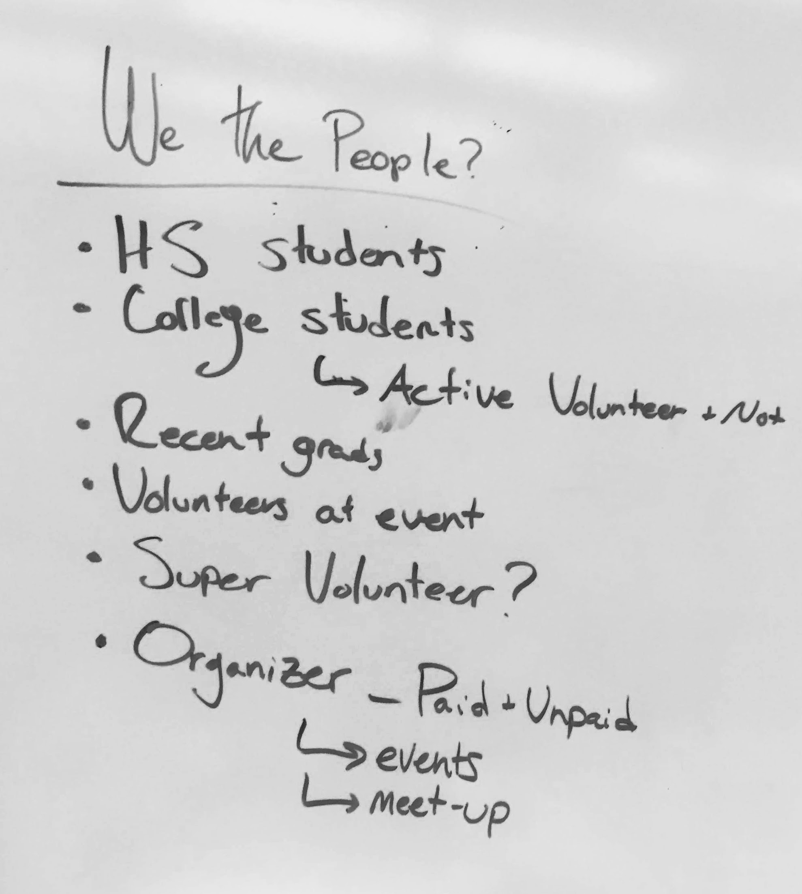
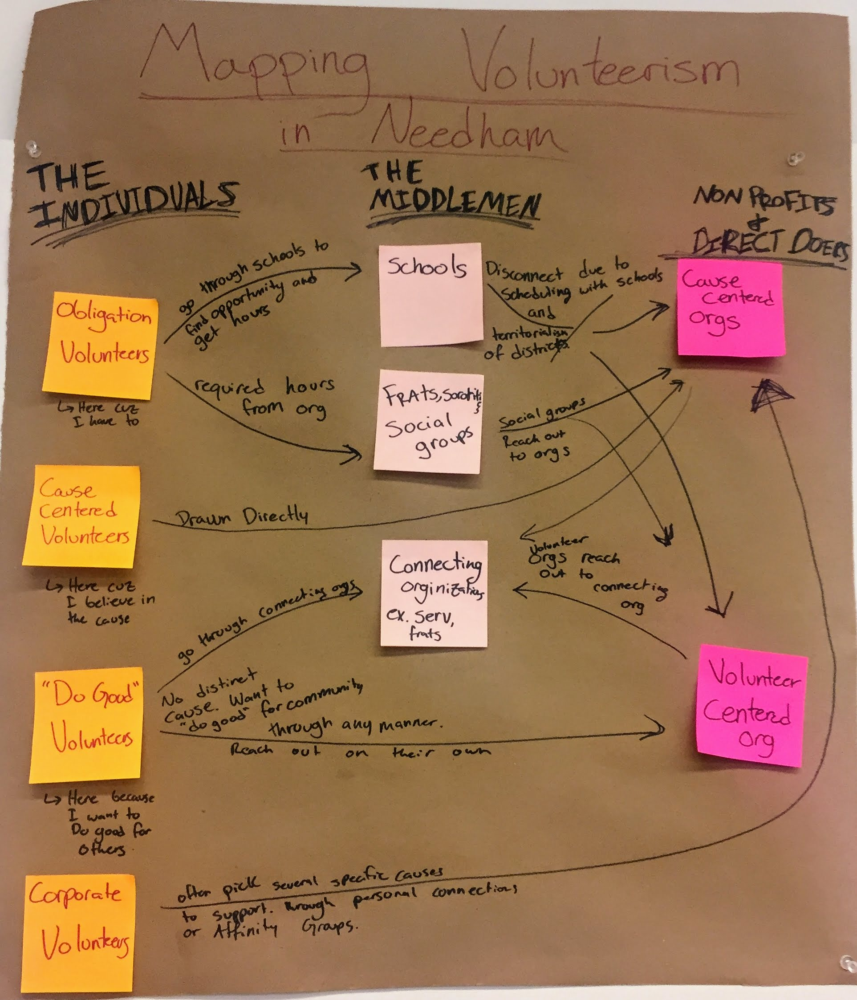

Analysis of Needs
Our Starting Point
We started out by talking to people in our user group. Initially, we categorized them to different types of high school stduents, college students, recent grads, volunteers, and organizers.
Squeezing

As a group, we unpacked the discussions we had, and named the people we interviewed after cheese.
Design Artifacts
From there, we created a few design artifacts - a venn diagram of the motivations, a map of volunteerism in needham and 2x2s on how our users find, and why they find volunteer opportunities and age vs motivation.